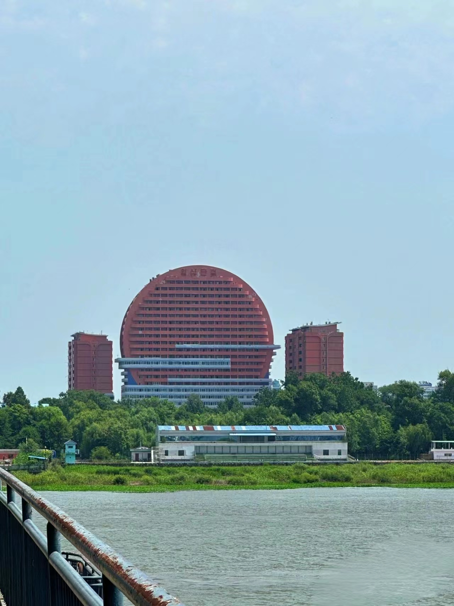

鸭绿江断桥
首先，我们来到鸭绿江断桥。这座历史悠久的断桥见证了中国人民志愿军抗美援朝战争中的英勇事迹。站在断桥上，我们可以眺望鸭绿江的奔流和边境线的壮丽景色，感受到当年英雄们跨过这座桥，守卫着祖国的决心和勇气。

安东老街
然后，我们来到安东老街。这个历史悠久的街区保留着丰富的传统建筑和古老的街景。漫步在老街上，我们可以欣赏到传统的石砌街道、木质建筑和独特的门窗风格。这里还有许多传统的手工艺店铺和小吃摊位，让我们可以品尝当地的特色美食和购买纪念品。在老街的尽头，我们可以俯瞰鸭绿江的壮丽景色，感受边境线上的边塞风情。

抗美援朝纪念馆
接着，我们继续前往抗美缓朝纪念馆。这个红色遗址是为了纪念参与朝鲜战争的英勇战士们而设立的。在馆内，通过展览、文物和图片，我们可以了解中国军民在抗美援朝战争中的英勇表现和巨大牺牲。这里展示了那段历史的背景、战争的经过以及中国军队的战略部署，让我们更深入地感受到那些英雄们为国家和民族利益而奋斗的坚定信念和伟大精神。

虎山长城
最后,虎山长城,国家AAAA级景区,中国唯一边境长城,是明代长城的东端起点,与“朝鲜八景”之一的统军亭隔江相望。景区内有明万里长城东端起点——虎山长城、中朝边境“一步跨”、睡观音、古栈道遗址等景点。虎山不算太大,大约3个小时就可以游览完。 中午 吃饭 长城外有很多农家乐可以任选一个，性价比都挺高，铁锅炖鱼是这边独有的特色菜 下午 前往河口看桃花，拍照绝美，然后到河口断桥景区看看历史留下的印记。